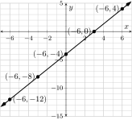

Section 3.2 Graphing Equations
We have graphed points in a coordinate system, and now we will graph lines and curves.
A graph of an equation is a picture of that equation’s solution set. For example, the graph of \(y=-2x+3\) is shown in Figure 3.2.3.(c). The graph plots ordered pairs whose coordinates make \(y=-2x+3\) true. Table 2 shows a few points that make the equation true.
| \((x,y)\) | \(y=-2x+3\) |
| \((\substitute{-1},\substitute{5})\) | \(\substitute{5}\confirm{=}-2(\substitute{-1})+3\) |
| \((\substitute{0},\substitute{3})\) | \(\substitute{3}\confirm{=}-2(\substitute{0})+3\) |
| \((\substitute{1},\substitute{1})\) | \(\substitute{1}\confirm{=}-2(\substitute{1})+3\) |
| \((\substitute{2},\substitute{-1})\) | \(\substitute{-1}\confirm{=}-2(\substitute{2})+3\) |
| \((\substitute{3},\substitute{-3})\) | \(\substitute{-3}\confirm{=}-2(\substitute{3})+3\) |
| \((\substitute{4},\substitute{-5})\) | \(\substitute{-5}\confirm{=}-2(\substitute{4})+3\) |
Table 2 tells us that the points \((-1,5)\text{,}\) \((0,3)\text{,}\) \((1,1)\text{,}\) \((2,-1)\text{,}\) \((3,-3)\text{,}\) and \((4,-5)\) are all solutions to the equation \(y=-2x+3\text{,}\) and so they should all be shaded as part of that equation’s graph. You can see them in Figure 3.2.3.(a). But there are many more points that make the equation true. More points are plotted in Figure 3.2.3.(b). Even more points are plotted in Figure 3.2.3.(c)—so many, that together the points look like a straight line.


The graph of an equation shades all the points \((x,y)\) that make the equation true once the \(x\)- and \(y\)-values are substituted in. Typically, there are so many points shaded, that the final graph appears to be a continuous line or curve that you could draw with one stroke of a pen.
Checkpoint 3.2.4.
The point \((4,-5)\) is on the graph in Figure 3.2.3.(c). What happens when you substitute these values into the equation \(y=-2x+3\text{?}\)
| \(y\) | \(=\) | \(-2x+3\) |
| \(\wonder{=}\) | \(-2(\)\()+3\) | |
| \(\wonder{=}\) |
Explanation.
Each side of the equation simplifies to \(-5\text{.}\) In other words, the equation simplifies to an outright true equation.
Checkpoint 3.2.5.
Decide whether \((5,-2)\) and \((-10,-7)\) are on the graph of the equation \(y=-\frac{3}{5}x+1\text{.}\)
| \(y\) | \(=\) | \(-\frac{3}{5}x+1\) |
| \(\wonder{=}\) |
| \(y\) | \(=\) | \(-\frac{3}{5}x+1\) |
| \(\wonder{=}\) |
Explanation.
If the point \((5,-2)\) is on \(y=-\frac{3}{5}x+1\text{,}\) once we substitute \(x=5\) and \(y=-2\) into the line’s equation, the equation should be true. Let’s try:
\begin{equation*}
\begin{aligned}
y\amp=-\frac{3}{5}x+1\\
-2\amp\wonder{=}-\frac{3}{5}(5)+1\\
-2\amp\confirm{=} -3+1
\end{aligned}
\end{equation*}
Because this last equation is true, we can say that \((5,-2)\) is on the graph of \(y=-\frac{3}{5}x+1\text{.}\)
However if we substitute \(x=-10\) and \(y=-7\) into the equation, it leads to \(-7=7\text{,}\) which is false. This tells us that \((-10,-7)\) is not on the graph.
To make our own graph of an equation with two variables \(x\) and \(y\text{,}\) we can choose some reasonable \(x\)-values, then calculate the corresponding \(y\)-values, and then plot the \((x,y)\)-pairs as points. For many algebraic equations, connecting those points with a smooth curve will produce an excellent graph.
Example 3.2.6.
Let’s plot a graph for the equation \(y=-2x+5\text{.}\) We use a table to organize our work:
| \(x\) | \(y=-2x+5\) | Point |
| \(-2\) | \(\phantom{-2(\substitute{-2})+5=\highlight{9}}\) | \(\phantom{(-2,9)}\) |
| \(-1\) | \(\phantom{-2(\substitute{-1})+5=\highlight{7}}\) | \(\phantom{(-1,7)}\) |
| \(0\) | \(\phantom{-2(\substitute{0})+5=\highlight{5}}\) | \(\phantom{(0,5)}\) |
| \(1\) | \(\phantom{-2(\substitute{1})+5=\highlight{3}}\) | \(\phantom{(1,3)}\) |
| \(2\) | \(\phantom{-2(\substitute{2})+5=\highlight{1}}\) | \(\phantom{(2,1)}\) |
| \(x\) | \(y=-2x+5\) | Point |
| \(-2\) | \(-2(\substitute{-2})+5=\highlight{9}\) | \((-2,9)\) |
| \(-1\) | \(-2(\substitute{-1})+5=\highlight{7}\) | \((-1,7)\) |
| \(0\) | \(-2(\substitute{0})+5=\highlight{5}\) | \((0,5)\) |
| \(1\) | \(-2(\substitute{1})+5=\highlight{3}\) | \((1,3)\) |
| \(2\) | \(-2(\substitute{2})+5=\highlight{1}\) | \((2,1)\) |
We use points from the table to graph the equation in Figure 8. First, we need a coordinate system to draw onto. We will eventually need to see the \(x\)-values \(-2\text{,}\) \(-1\text{,}\) \(0\text{,}\) \(1\text{,}\) and \(2\) on the graph. So drawing an \(x\)-axis that runs from \(-5\) to \(5\) will be good enough. We will eventually need to see the \(y\)-values \(9\text{,}\) \(7\text{,}\) \(5\text{,}\) \(3\text{,}\) and \(1\) too. So drawing a \(y\)-axis that runs from \(-1\) to \(10\) will be good enough.
Axes should always be labeled using the variable names they represent. In this case, with “\(x\)” and “\(y\)”. The axes should have tick marks that are spaced evenly. In this case it is fine to place the tick marks one unit apart (on both axes). Labeling at least some of the tick marks is necessary for a reader to understand the scale. Here we label the even-numbered ticks.
Then connect the points with a smooth curve. Here, the curve is a straight line. Lastly, we can communicate that the graph extends further by sketching arrows on both ends of the line.
Decisions we made about the scale for each axis is drawn in Figure (a).
Next we carefully plot each point from the table in Figure (b). It’s not necessary to label each point’s coordinates, but we do so here.
Last we connect the points with a smooth curve. Here, the “curve” is a straight line. We communicate that the line extends further by putting arrowheads on both ends.


Note that our choice of \(x\)-values in the table was arbitrary. As long as we determine the coordinates of enough points to indicate the behavior of the graph, we may choose whichever \(x\)-values we like. Having a few negative \(x\)-values will be good. For simpler calculations, it’s fine to choose \(-2\text{,}\) \(-1\text{,}\) \(0\text{,}\) \(1\text{,}\) and \(2\text{.}\)
Checkpoint 3.2.9.
Plot a graph for the equation \(y=\frac{4}{3}x-4\text{.}\)
(a)
First, make a table. This equation doesn’t have any context to help us choose \(x\)-values for a table. We could use \(x\)-values like \(-2\text{,}\) \(-1\text{,}\) and so on. But take note that there is a fraction in the equation. If we are clever, we can avoid fraction arithmetic which is a source of human error. If we use only multiples of \(3\) for the \(x\)-values, then multiplying by \(\frac{4}{3}\) will leave us with an integer. So we decide to use \(-6\text{,}\) \(-3\text{,}\) \(0\text{,}\) \(3\text{,}\) and \(6\) for \(x\text{.}\)
| \(x\) | \(y=\frac{4}{3}x-4\) | Point |
| \(-6\) | ||
| \(-3\) | ||
| \(0\) | ||
| \(3\) | ||
| \(6\) |
Explanation.
| \(x\) | \(y=\frac{4}{3}x-4\) | Point |
| \(-6\) | \(-12\) | \((-6,-12)\) |
| \(-3\) | \(-8\) | \((-3,-8)\) |
| \(0\) | \(-4\) | \((0,-4)\) |
| \(3\) | \(0\) | \((3,0)\) |
| \(6\) | \(4\) | \((6,4)\) |
(b)
Use points from the table to graph the equation.
Explanation.
First, plot each point carefully. Then connect the points with a smooth line/curve. Here, the curve is a straight line.

Sometimes an equation has context that suggests using other \(x\)-values, as in the next example.
Example 3.2.10.
The gas tank in Sofia’s car holds 14 gal of fuel. Over the course of a long road trip, her car uses fuel at an average rate of 0.032 gal⁄mi. If Sofia fills the tank at the beginning of a long trip, then the amount of fuel remaining in the tank, \(y\text{,}\) after driving \(x\) miles is given by the equation \(y=14-0.032x\text{.}\) Make a suitable table of values and graph this equation.
Explanation.
Choosing \(x\)-values from \(-2\) to \(2\) as in an earlier example wouldn’t make sense here. Sofia cannot drive a negative number of miles, and any long road trip is longer than \(2\) miles. So in this context, choose \(x\)-values that reflect the number of miles Sofia might possibly drive in a day. We choose values like \(20\) and \(200\text{,}\) as well as several values in between.
| \(x\) (miles) | \(y=14-0.032x\) | Point |
| \(20\) | \(13.36\) | \((20,13.36)\) |
| \(50\) | \(12.4\) | \((50,12.4)\) |
| \(80\) | \(11.44\) | \((80,11.44)\) |
| \(100\) | \(10.8\) | \((100,10.8)\) |
| \(200\) | \(7.6\) | \((200,7.6)\) |

In Figure 12, notice how both axes are also labeled with units (“gallons” and “miles”). When the equation you plot has context like this example, including the units in the axes labels is very important to help anyone who reads your graph to understand it better.
In the table, \(x\)-values ran from \(20\) to \(200\text{,}\) while \(y\)-values ran from \(13.36\) down to \(7.6\text{.}\) So it was appropriate to make the \(x\)-axis cover something like from \(0\) to \(250\text{,}\) and make the \(y\)-axis cover something like from \(0\) to \(20\text{.}\) The scales on the two axes ended up being different.
Not all equations make a straight line once they are plotted.
Example 3.2.13.
Build a table and graph the equation \(y=x^2\text{.}\) Use \(x\)-values from \(-3\) to \(3\text{.}\)
Explanation.
| \(x\) | \(y=x^2\) | Point |
| \(-3\) | \((-3)^2=9\) | \((-3,9)\) |
| \(-2\) | \((-2)^2=4\) | \((-2,4)\) |
| \(-1\) | \((-1)^2=1\) | \((-1,1)\) |
| \(0\) | \((0)^2=0\) | \((0,0)\) |
| \(1\) | \((1)^2=1\) | \((0,1)\) |
| \(2\) | \((2)^2=4\) | \((2,4)\) |
| \(3\) | \((3)^2=9\) | \((3,9)\) |

Once points are plotted and we can see a pattern, we do our best to connect the points with a smooth curve.
In this last example, the points did not fall on a straight line. Many algebraic equations have graphs that are non-linear, where the points do not fall on a straight line. What is it that makes an equation have a straight line?
A linear expression in two variables is an expression in the form \(ax+by+c\text{,}\) where \(a\text{,}\) \(b\text{,}\) and \(c\) are numbers, at least one of \(a\text{,}\) \(b\) is nonzero, and \(x\text{,}\) \(y\) are variables. For example, \(2x+3y+1\) and \(x-3y+\frac{1}{2}\) are linear expressions in two variables. We also count an expression like \(x+1\) as a linear expression in two variables, if we view it as \(x+0y+1\text{.}\)
Definition 3.2.14. Linear Equation in Two Variables.
A linear equation in two variables is any equation where you could add/subtract terms in such a way as to get a linear expression in two variables on one side, and \(0\) on the other side.
The following are each an example of a linear equation in two variables. Note that if you only see one variable in one of these equations, you can add the other variable somewhere with coefficient \(0\text{.}\)
\begin{align*}
x-y\amp=5 \amp 4x+y\amp=5x \amp 10\amp=\frac{1}{2}x
\end{align*}
\begin{align*}
3-2(p+2)\amp=5q \amp \sqrt{2} r+t\amp=10 \amp s+2t\amp=\frac{s}{2}+3
\end{align*}
Note that \(r\) is outside the square root symbol.
A linear equation in two variables never does things like square a variable, or take the square root of a variable. It never has a variable in a denominator. It never multiplies the two variables together. Etc. It can only multiply a variable by constant, and then add to other terms to form one side or the other of the equation.
The following are not linear equations in two variables:
- \(1+2=3\)
- There is no variable.
- \(4x^2-2y^2=5\)
- The variables are squared
- \(\sqrt{2r}+3t=10\)
- The variable \(r\) is inside the square root.
- \(5s-t=\frac{2}{s}+3\)
- The variable \(s\) is in a denominator.
If you learn to recognize when a given equation in two variables is linear, then you will know ahead of time that its graph is some sort of straight line.
Reading Questions Reading Questions
1.
When a point like \((5,8)\) is on the graph of an equation, where the equation has variables \(x\) and \(y\text{,}\) what happens when you substitute \(5\) in for \(x\) and \(8\) in for \(y\) into that equation?
2.
What are all the things to label when you set up a Cartesian coordinate system?
3.
When you start making a table for some equation, you have to choose some \(x\)-values. Explain three different ways to choose those \(x\)-values that were demonstrated in this section.
4.
What is an example of an equation that does not make a straight line once you make a graph of it?
Exercises Exercises
Skills Practice
Testing Points as Solutions.
Which of the ordered pairs are solutions to the given equation? There may be more than one correct answer.
1.
\(y={5x-7}\)
- \(\displaystyle \left(3,8\right)\)
- \(\displaystyle \left(-17,-2\right)\)
- \(\displaystyle \left(-3,-22\right)\)
- \(\displaystyle \left(0,-2\right)\)
2.
\(y={5x+6}\)
- \(\displaystyle \left(0,6\right)\)
- \(\displaystyle \left(1,11\right)\)
- \(\displaystyle \left(-4,-2\right)\)
- \(\displaystyle \left(-3,-10\right)\)
3.
\(y={7x-9}\)
- \(\displaystyle \left(-10.4,-0.2\right)\)
- \(\displaystyle \left(4.6,19.2\right)\)
- \(\displaystyle \left(-3.7,-34.9\right)\)
- \(\displaystyle \left(-2.1,-23.7\right)\)
4.
\(y={7x+4}\)
- \(\displaystyle \left(-0.7,-0.9\right)\)
- \(\displaystyle \left(-15.6,-2.8\right)\)
- \(\displaystyle \left(1.1,12.7\right)\)
- \(\displaystyle \left(3.4,27.8\right)\)
5.
\(y={8x+1}\)
- \(\displaystyle \left({\frac{8}{5}},{\frac{69}{5}}\right)\)
- \(\displaystyle \left({\frac{3}{5}},{\frac{54}{5}}\right)\)
- \(\displaystyle \left({\frac{4}{5}},{\frac{37}{5}}\right)\)
- \(\displaystyle \left({\frac{26}{2}},{\frac{3}{2}}\right)\)
6.
\(y={9x-1}\)
- \(\displaystyle \left({\frac{8}{3}},{\frac{75}{3}}\right)\)
- \(\displaystyle \left({\frac{5}{2}},{\frac{43}{2}}\right)\)
- \(\displaystyle \left({\frac{4}{5}},{\frac{31}{5}}\right)\)
- \(\displaystyle \left({\frac{59}{4}},{\frac{7}{4}}\right)\)
7.
\(y={{\frac{7}{5}}x-9}\)
- \(\displaystyle \left(10,5\right)\)
- \(\displaystyle \left(15,12\right)\)
- \(\displaystyle \left(19,20\right)\)
- \(\displaystyle \left(-15,-29\right)\)
8.
\(y={{\frac{4}{3}}x-7}\)
- \(\displaystyle \left(-6,-13\right)\)
- \(\displaystyle \left(3,-3\right)\)
- \(\displaystyle \left(-12,-23\right)\)
- \(\displaystyle \left(-7,0\right)\)
Exercise Group.
Make a table and then plot the equation.
9.
\(y={-\left(2x+3\right)}\)
| \(x\) | \(y\) | Point |
| \(-2\) | ||
| \(-1\) | ||
| \(0\) | ||
| \(1\) | ||
| \(2\) |
10.
\(y={2-x}\)
| \(x\) | \(y\) | Point |
| \(-2\) | ||
| \(-1\) | ||
| \(0\) | ||
| \(1\) | ||
| \(2\) |
11.
\(y={-{\frac{4}{3}}x-1}\)
| \(x\) | \(y\) | Point |
| \(-6\) | ||
| \(-3\) | ||
| \(0\) | ||
| \(3\) | ||
| \(6\) |
12.
\(y={-{\frac{3}{4}}x-3}\)
| \(x\) | \(y\) | Point |
| \(-8\) | ||
| \(-4\) | ||
| \(0\) | ||
| \(4\) | ||
| \(8\) |
13.
\(y={x^{2}-2x-7}\)
| \(x\) | \(y\) | Point |
| \(-2\) | ||
| \(-1\) | ||
| \(0\) | ||
| \(1\) | ||
| \(2\) |
14.
\(y={x^{2}+2x-2}\)
| \(x\) | \(y\) | Point |
| \(-2\) | ||
| \(-1\) | ||
| \(0\) | ||
| \(1\) | ||
| \(2\) |
15.
\(y={x^{3}+x^{2}-x}\)
| \(x\) | \(y\) | Point |
| \(-2\) | ||
| \(-1\) | ||
| \(0\) | ||
| \(1\) | ||
| \(2\) |
16.
\(y={-x^{3}+x^{2}-x-2}\)
| \(x\) | \(y\) | Point |
| \(-2\) | ||
| \(-1\) | ||
| \(0\) | ||
| \(1\) | ||
| \(2\) |
Identifying Linear Equations in Two Variables.
Select the equations that are linear in two variables, including any where you must imagine an additional variable with coefficient \(0\text{.}\)
17.
- \(\displaystyle -4y-16y=-3\)
- \(\displaystyle 6.3x=7.4V\)
- \(\displaystyle 4V-3\mathopen{}\left|x\right|=-1\)
- \(\displaystyle 2\pi r=11\pi \)
- \(\displaystyle 5y+6V^{2}=17\)
- \(\displaystyle \sqrt{0.7V+7}=\frac{5}{y}\)
- None of the above
18.
- \(\displaystyle y+8V=6\)
- \(\displaystyle 3y-2\mathopen{}\left|p\right|=24\)
- \(\displaystyle 2x=2.4z\)
- \(\displaystyle 4V+9y^{2}=26\)
- \(\displaystyle 2\pi r=2\pi \)
- \(\displaystyle \sqrt{4.5z-7}=\frac{3}{y}\)
- None of the above
Applications
19.
A new water heater for your home is will cost \({\$900.00}\) to buy and have installed. With this new more efficient water heater, your monthly gas bill will be (on average) \({\$25.00}\text{.}\) According to this information, the equation \(y={900+25x}\) models the total expense from heating your domestic hot water after \(x\) months, where \(y\) is in dollars. Make a graph of this equation.
20.
You bought a new car for \({\$48{,}000}\) with a zero interest loan over a five-year period. That means you’ll have to pay \({\$800}\) each month for the next five years (\(60\) months) to pay it off. According to this information, the equation \(y={48000-800x}\) models the loan balance after \(x\) months, where \(y\) is in dollars. Make a graph of this equation.
21.
The pressure in a full propane tank will rise and fall if the ambient temperature rises and falls. The equation \(P={0.2\mathopen{}\left(T+460\right)}\) models this relationship, where the temperature \(T\) is measured in °F and the pressure and the pressure \(P\) is measured in lb/in^2. Plot a graph of this equation. Make sure to use \(T\)-values that make sense in context.
22.
A beloved coworker is retiring and you want to give them a gift of week-long vacation rental at the coast that costs \({\$2{,}040.00}\) for the week. You might end up paying for all of it yourself, but you ask around to see if any of the other office coworkers want to split the cost evenly. The equation \(y={\frac{2040}{x}}\) models this situation, where \(x\) people contribute to the gift, and \(y\) is the dollar amount each individual will contribute. Plot a graph of this equation.